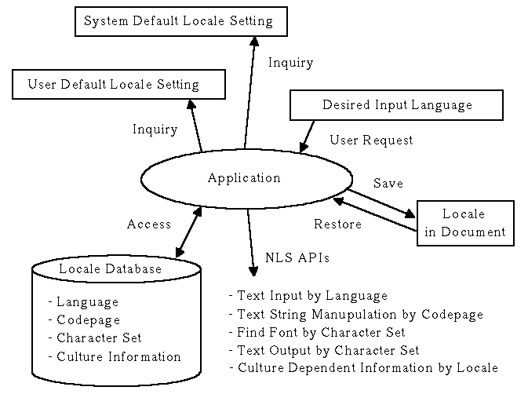

Understanding Win32 National Language Support
Different from OS/2 applications, Win32 applications share one system default codepage that is fixed in a system. Conventional Win32 NLS APIs refer to this codepage implicitly to detect how they should manipulate text string. Because an application cannot override this default codepage setting, it had been difficult for developers to create application that manipulates text string written in a specific language other than the system default one. The Win32 NLS APIs in this category are mainly used to localize applications to specific locations.
To overcome this situation, the most recent Win32 platforms provide new set of NLS APIs that are designed to be used with locale database. The locale database in the Win32 platforms contains location, language for text input, codepage for text string manipulation, character set of the font for text output, and some other culture-dependent information, such as date and time formats, for developers to reduce localization efforts.
These locale based information can be accessed with a locale id, which can vary from application's default locale setting independently. Application can select a locale as desired, or it can obtain request from user as Input Language Change as a trigger to switch current locale to another. By embedding and retrieving locale information to/from a document, the application can also have Multilingual Content capability.
Along with these locale based NLS functions, the Win32 NLS APIs support code conversion between codepage based text and Unicode based text, to assist transmitting documents between locations. Also by using Unicode as application's internal Wide Char expression, mixed-byte text manipulation logic in the program code will be simplified.
There are some unique writing systems used in specific locations, for example, Vertical Writing System in Far East countries, and Bi-Directional Writing System in Middle East countries. The Win32 NLS APIs also provide supports for these writing systems.
There are differences between the levels of NLS API support between Win32 platforms. The Windows 95 has subset implementation of Win32 NLS APIs, with some up-to-date additions, which will be implemented later in other Win32 platforms. Because many applications are being written to Windows 95, the Windows 95 set of Win32 NLS APIs can be considered as recent standard in Win32 platforms.